BioPapro Design Hub – user guide
Design Hub makes our packaging and product documents in the browser: boxes with a 3D preview, printed wrapping paper, and TDS sheets in the same format as the TDS folder. Nothing to install; open the link and start.
Shelf boxes, shipping cartons and counter displays. See the box in 3D, change text and colours, download print and die files.
How to make a box →Printed wrappers for individually wrapped cutlery and straws, with a printer's proof and paper usage.
How to make a wrapper →Straw TDS, raw material TDS, finished cutlery TDS and customer product specifications.
How to make a TDS →Which file goes to whom
| Sending to | Download this | Where to find it |
|---|---|---|
| Customer / sales / WhatsApp | Product photo (PNG). For websites and Amazon: Photo with no background. | Packaging → step 4 Download |
| Box printer | Print file, actual size (PDF). If they ask for an editable file: Artwork + cut lines (SVG). | Packaging → step 4 Download |
| Die-maker | Die-maker files (ZIP with a DXF and a labelled drawing). | Packaging → step 4 Download |
| Wrapper printer | Artwork (SVG) for printing, Proof PDF for approval. | Packaging → step 2 → Wrapping paper |
| Customer approval of a wrapper | Proof PDF (has a sign / date box). | Packaging → step 2 → Wrapping paper |
| Customer / QA asking for a TDS or spec | Download PDF. Customer specs also come as Word. | Product documents |
1Pick the product
Every box starts from one of our products. The left panel walks you through 4 steps: Product → Box size → Design → Download. Use Next → and ← Back at the bottom, or click a step number at the top.
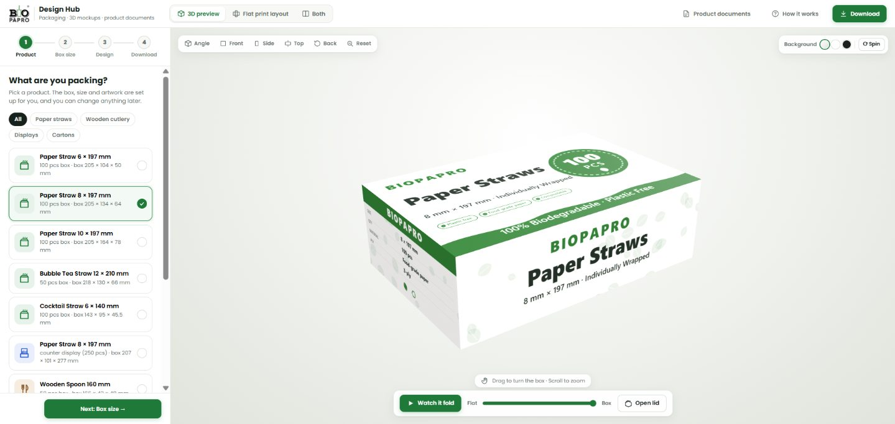
- Open the link. The first time, a short welcome card appears; click Let's start.
- Use the filter buttons (Paper straws, Wooden cutlery, Displays, Cartons) to narrow the list.
- Click a product card. The box size, artwork and colours are filled in for you. A green tick shows which one is selected.
- Click Next: Box size →.
2Box type & size
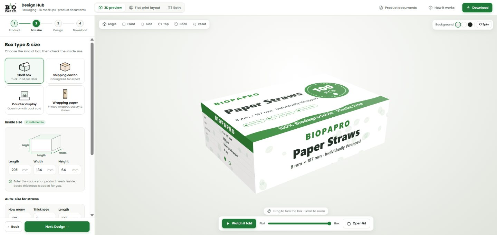
- Choose the box type: Shelf box (tuck-in lid, retail), Shipping carton (corrugated, export), Counter display (open tray with a back card), or Wrapping paper (see the Wrapping paper section).
- Check the inside size in millimetres: Length, Width, Height. Enter the space the product needs inside the box; the board thickness is added automatically.
- For straws, let it work out the size: under Auto-size for straws, enter how many straws, their thickness and length, tick paper-wrapped if they are, and click Work out the box size for me.
- Choose the board (white board, kraft, 3-ply or 5-ply corrugated). This changes the weight and cost figures, and the inside colour in 3D.
3Design the box
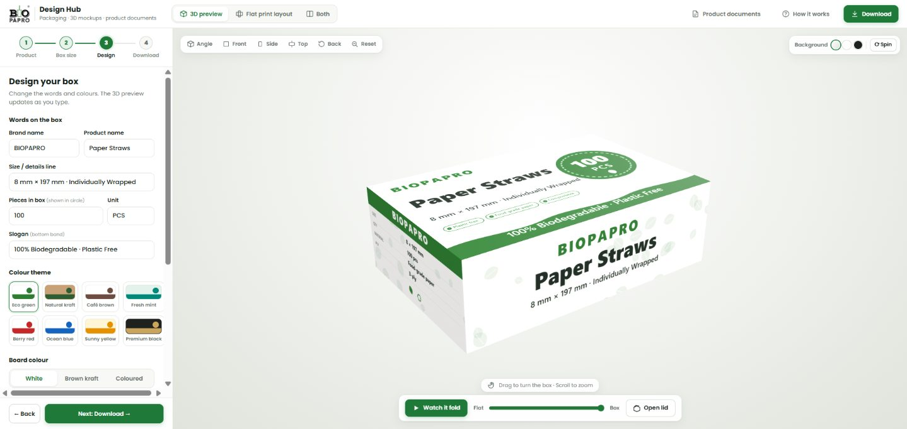
- Words on the box: brand name, product name, size line, pieces in the box (shown in the round badge) and the slogan in the bottom band.
- Colour theme: one click changes all colours together (Eco green, Natural kraft, Café brown, and more).
- Board colour: White, Brown kraft or Coloured. Background pattern: Plain, Leaves, Stripes or Dots.
- Logo: click the logo box or drag a file onto it. A PNG with no background looks best.
- Back & side panel text (click to open): features, specifications, product description, manufacturer details and the barcode number.
- Custom colours: pick exact colours instead of a theme.
- Use your own artwork on one side: choose a side (for example the Front) and upload a finished design made in CorelDRAW or Photoshop. Leave 3 mm extra on every edge.
4Download
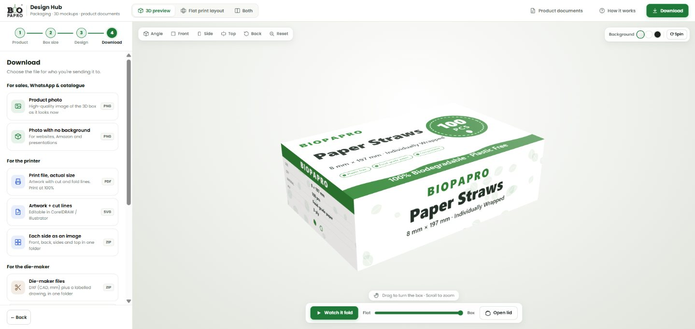
| File | What it is | Use it for |
|---|---|---|
| Product photo PNG | High-quality picture of the 3D box exactly as it looks on screen. | WhatsApp, quotations, catalogue |
| Photo with no background PNG | Same picture without the background. | Website, Amazon, presentations |
| Print file, actual size PDF | The flat box with artwork, cut lines (red) and fold lines (blue) at real size. | Box printer. Print at 100%. |
| Artwork + cut lines SVG | Same as the PDF but editable. | Printer or designer using CorelDRAW / Illustrator |
| Each side as an image ZIP | Front, back, sides and top as separate pictures. | Designers, catalogue |
| Die-maker files ZIP | DXF drawing in millimetres plus a labelled drawing. | Die-maker (cutting die) |
| Save project JSON | Your whole design, to open again later. | Keeping or sharing a design |
The Download button in the top bar always brings you to this step.
Using the 3D view
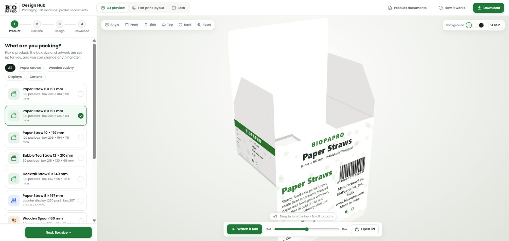
| To do this | Do this |
|---|---|
| Turn the box | Click and drag on the box |
| Zoom in or out | Mouse wheel (or pinch on a touchpad) |
| Jump to a view | Top-left buttons: Angle Front Side Top Back; Reset fixes the zoom |
| See it fold from flat | ▶ Watch it fold, or drag the Flat ↔ Box slider |
| Open the lid / see straws inside | Open lid (shelf boxes and cartons) |
| Change the background or spin it | Top-right: three background dots and Spin |
Flat print layout
Click Flat print layout in the top bar (or Both to see it next to the 3D view). This is the box opened out flat, exactly as the printer and die-maker see it.
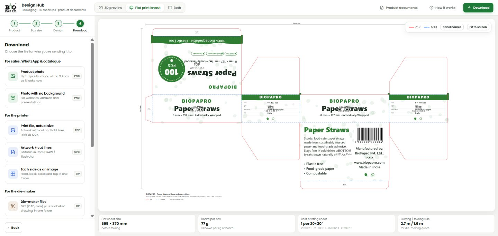
- Panel names shows or hides the labels (FRONT, SIDE, TOP…). Fit to screen resets the view. Scroll to zoom, drag to move.
- Flat sheet size – size of the board before folding.
- Board per box – grams of board for one box (and boxes per kg).
- Best printing sheet – how many boxes fit on standard printing sheets (20×30", 23×36", 25×36", 28×40").
- Cutting / folding rule – total length of cut and fold lines; the die-maker prices the die on this.
Saving your work
- Your latest design is remembered automatically in this browser on this computer.
- To keep a design safely, or to send it to a colleague, use Save project (step 4). It downloads a small
.jsonfile. - To continue later, click Open project and choose that file.
WWrapping paper
For individually wrapped cutlery (a printed sheet that folds around the piece) and straw wrappers (a narrow printed strip).
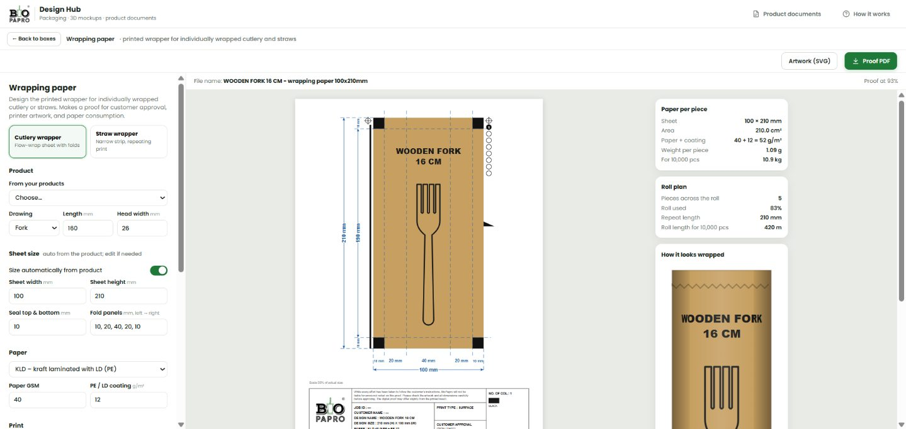
- Go to Packaging → step 2 and click Wrapping paper. Use ← Back to boxes to return.
- Choose Cutlery wrapper or Straw wrapper at the top.
- Product: pick from From your products. The sheet size is worked out for you (for a 160 mm fork: 100 × 210 mm, folds 10 | 20 | 40 | 20 | 10 mm, 10 mm seals).
- Sheet size: to set your own size, turn off Size automatically from product and type the width, height, seal size and fold panels (left to right, separated by commas).
- Paper: choose the paper (Kraft, KLD = kraft with LD/PE coating, White) and the GSM. The weight per piece updates.
- Print: main text and second line, ink colour, surface or reverse print, number of colours, drawing size, eye marks, and whether to show the BioPapro logo.
- Proof details: job ID, customer name and design name. These appear in the proof's title box.
- Roll & quantity: roll width and number of pieces, to see how many wrappers fit across the roll and the roll length needed.
- Download: Proof PDF for customer approval (it has a sign / date box), Artwork (SVG) at actual size for the printer.
TProduct documents (TDS)
Click Product documents in the top bar. The page on the right is exactly what gets downloaded.
| Document | Page | Used for | Drive folder it matches |
|---|---|---|---|
| Paper straw TDS | A4 portrait | Straw size, ply, GSM, weight, with a dimensioned photo | TDS OF PAPER STRAW |
| Raw material TDS | A4 portrait | Raw cutlery piece: weight, pcs per kg, wastage, drawing | TDS OF RAW MATERIALS |
| Finished cutlery TDS | A4 landscape | Thickness, packing, box weight and size, two photos | TDS OF WOODEN CUTLERIES |
| Customer product spec | A4, 1–2 pages | Customer-specific packing details, PDF and Word | PRODUCT DETAILS |
The same 4 steps for every document
- Click the document type (four cards at the top left).
- Under Start from, choose an existing product. All products from the TDS folder are there (14 straws, 8 raw materials, 53 cutlery items, 6 customer specs). Click Blank for a new one.
- Change what you need and upload the photo(s).
- Click Download PDF (and Word for customer specs). The file name follows the Drive folder style, for example 8X197MM PLAIN WHITE PAPER STRAW.pdf.
Paper straw TDS
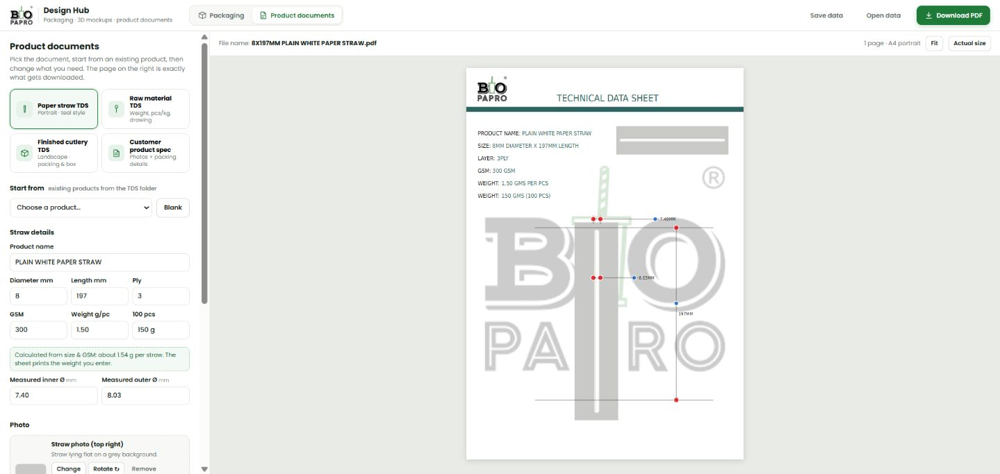
- Fill in product name, diameter, length, ply, GSM and the weight per straw. The weight for 100 pcs is calculated.
- The green box shows a calculated weight as a check. The sheet prints the weight you type, so enter the measured value.
- Enter the measured inner and outer diameter. They appear on the drawing.
- Photo: click the dashed box on the page (or drag a photo file onto it), or use Upload on the left. One photo of the straw lying flat is used at the top right and, turned upright, for the drawing.
- Arrows: drag the red dots on the page so the arrows touch the edges of the straw. The blue dots move the line and label. The dots never print.
Raw material TDS
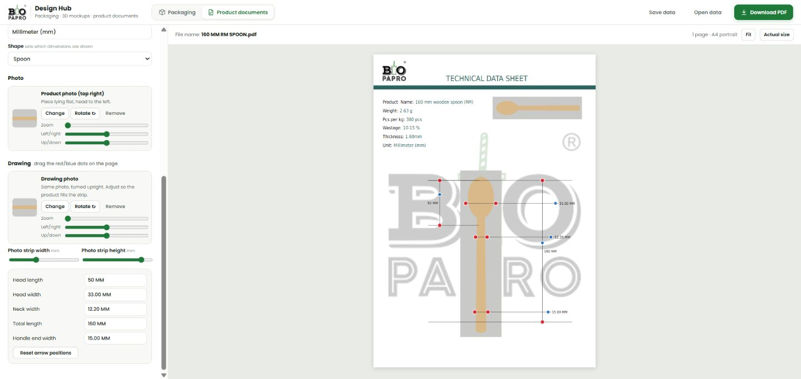
- Fill in weight, pcs per kg, wastage and thickness.
- Shape (spoon, fork, knife, scoop) decides which measurements are drawn.
- Type each measurement in the list (head length, head width, neck width, total length, handle end width…).
- Upload a photo of the piece lying flat with the head to the left. Use Zoom, Left/right, Up/down so the piece fills the strip; Photo strip width/height resizes the strip.
- Drag the dots so each arrow touches the right edges. Reset arrow positions puts them back.
Finished cutlery TDS
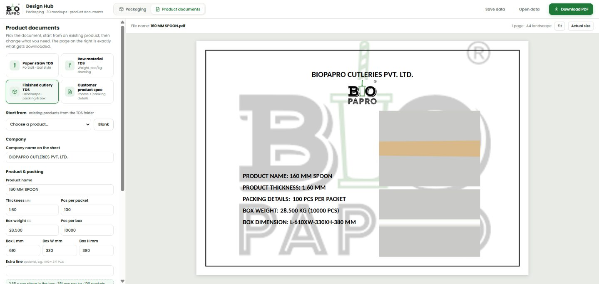
- Company name is pre-filled as BIOPAPRO CUTLERIES PVT. LTD.
- Fill in thickness, pieces per packet, box weight, pieces per box and box size (L × W × H).
- The green box checks your numbers: grams per piece, pieces per kg and packets per box.
- Extra line is for special cases such as round sticks (1 KG = 371 PCS).
- Upload two photos: loose pieces (top) and the packed packet (bottom).
Customer product spec
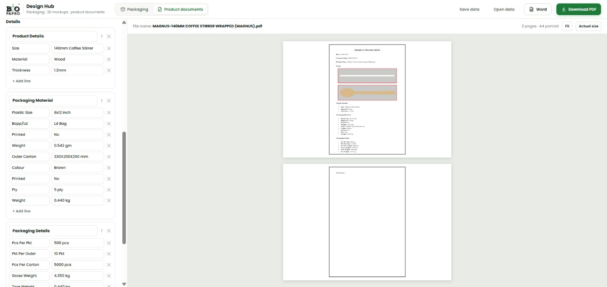
- Header: date, customer name and product name.
- Photos: + Add photos. The first photo sits on its own row; up to 3 more go side by side below. A red border is added automatically.
- Details: each section (Product Details, Packaging Material, Packaging Details, Documents…) has label / value lines. Use + Add line, ✕ to remove, ↑ to move a section up, and + Add a section… for Wrapping Paper, Tissue Paper or Inner Carton details.
- Checks: a yellow message appears if the net weight is not gross − tare, or pieces per carton is not pieces × packets. Fix the numbers before sending.
- Download as Download PDF or Word (Word can be edited further).
Moving and resizing photos (like Word)
| To do this | Do this |
|---|---|
| Add a photo | Click a dashed “+ Click or drop a photo here” box on the page, or drag a photo file onto it |
| Select a photo | Click it. A blue frame with handles and a small black toolbar appear |
| Move it | Drag the photo |
| Make it bigger or smaller | Drag a corner handle (keeps the shape). Hold Shift to change the shape freely |
| Make the frame wider / taller only | Drag a handle in the middle of a side |
| Zoom into the photo inside its frame | Scroll the mouse wheel over the selected photo, or toolbar ＋ － |
| Slide the photo inside its frame | Hold Alt and drag |
| Make the big faded logo behind the page lighter, darker or remove it | Left side, under Start from: Background logo → Light / Darker / None |
| Change how the photo fits | Toolbar: Auto fit (normal, product fitted neatly) · Whole photo (nothing cut off) · Fill frame (photo covers the whole spot) |
| An arrow is on the wrong spot | Drag its dot. That arrow then stays where you put it. Reset arrow positions makes all arrows follow the product again |
| Turn, replace or remove | Toolbar ↻, Replace, Remove |
| Start again | Toolbar Reset puts the photo back in its standard place and size |
| Deselect | Click an empty part of the page, or press Esc |
On the customer spec, photos stay in rows; drag a corner (or use ＋ Bigger / － Smaller) to change their size. The blue frame, handles and toolbar never print.
Taking good product photos
- Lay the product flat on a plain grey or white sheet, horizontal, head to the left.
- Use daylight or a bright white light; avoid strong shadows.
- Hold the phone straight above the product, not at an angle, and fill most of the photo with the product.
- Phone photos are fine; large photos are reduced automatically.
?Common problems
The 3D box is not showing
Product documents say "Loading document fonts…" for a while
The printed box or proof is the wrong size
Where did my download go?
My design disappeared
The Word file looks a little different from the PDF
A product or size is missing from the list
Words used in this tool
| Word | Meaning |
|---|---|
| Dieline / flat layout | The box opened out flat, showing where to cut and fold. |
| Cut line / fold (crease) line | Red = the die cuts here. Blue dashed = the board is folded here. |
| Bleed | 3 mm of extra artwork around the edges, so no white shows if the cut is slightly off. |
| Ply / flute | Layers of corrugated board. 3-ply for light boxes, 5-ply for export cartons. |
| GSM | Grams per square metre: how heavy (thick) the paper or board is. |
| KLD | Kraft paper laminated with LD (polythene) coating, used for wrappers. |
| Eye mark | Small black square the wrapping machine reads to cut each wrapper in the right place. |
| Proof | A preview for the customer to check and sign before printing. |
| TDS | Technical Data Sheet: the product's specifications on one page. |